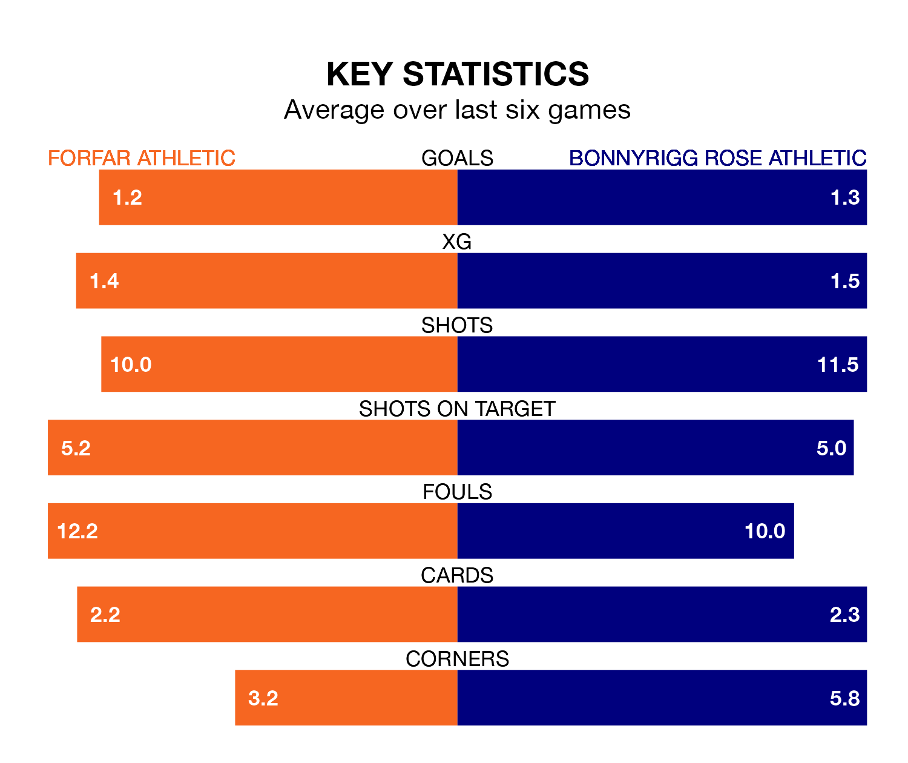

Struggling Forfar Athletic face Bonnyrigg Rose Athletic at Station Park on Saturday looking to build on a win in their last league outing.
After securing all three points with a 2-1 victory over Elgin City on January 13, the Loons sit eighth in League Two.
They travel to play a Bonnyrigg Rose side fifth in the standings, who were held in their last match, 1-1 against Dumbarton.
In Neil Martyniuk, Bonnyrigg Rose have one of the league's sharpest shooters so far this season. He has notched nine goals in 19 appearances, to sit second in the scoring charts.
Forfar's top scorers, with five goals each, are Sebastian Ross and Stuart Morrison.
In the last 10 years, Forfar and Bonnyrigg Rose have played each other on six occasions. Forfar won one of them, Bonnyrigg Rose three, and they drew twice.
On average, the Loons scored 0.8 goals and Bonnyrigg Rose 1.2 in those matches.
Their last meeting was on November 18, when Forfar won 2-0 away.
With 20 goals in 20 games so far this season, Forfar Athletic are the league's second-lowest scorers with 1.0 goals per game. But they are conceding fewer than average too, letting in 26 goals at a rate of 1.3 per game.
Bonnyrigg Rose Athletic, meanwhile, are above average scorers, with 1.5 goals per game, compared to a league average of 1.4. They have conceded 1.6 goals per game.
The Loons are in mixed form in League Two, with two wins and a draw from their last six games.
With a win and two draws over that period, the visitors' form is slightly worse – they have taken five points from 18, compared to the home team's seven.
Updated: 08:51 (UTC), 25/01/24